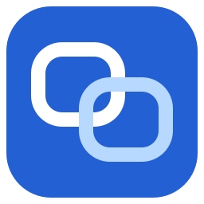

Run maintenance commands
Authorized operators send bounded commands and receive results with execution time and output limits.

RemsupWindows remote support
A visible Windows app for authorized maintenance. Connect a support operator or an AI agent, with controls that stay in the device owner’s hands.
Built for support
Authorized operators send bounded commands and receive results with execution time and output limits.
Screen capture, mouse and keyboard control follow the receiving device’s settings, consent policy and session expiry.
The owner can stop support and exit from the tray. Unattended access requires explicit device-owner authorization.
For AI operators
Remsup exposes authenticated MCP tools for authorized support work. Connect your agent to an administrator-provisioned endpoint and use the support skill to follow the documented workflow.
Explore the operator skillAgree on the device and the maintenance task.
Use configured infrastructure and protected credentials.
Check command results and close screen sessions when finished.
Before your first session
This is a source distribution for controlled testing. Bring your own configured infrastructure and review the security model before use.
Read the security notesWindows x64 and the separately installed Evergreen WebView2 Runtime. Build the single Windows EXE from source using the prerequisites in the README. No hosted relay, update service or release executable is supplied with the source snapshot.
Build prerequisitesNo. Closing or minimizing the window can keep support running in the tray. Use Stop support to end receiving support, or tray Exit to close the application.
Work requires device-owner authorization. Screen access follows the receiving device’s settings; automatic approval after pairing can be enabled. Do not assume every command or screen action prompts the owner. Windows administrator elevation remains a local owner action.
Remote editing of ordinary settings is OFF by default. It requires local owner opt-in and an authenticated screen-control session, and is limited to specified settings. Permission changes, credentials, firewall and administrator actions remain local.
Permission detailsWindows relay and LAN connections use TLS with a verified certificate pin. The relay administrator can inspect relayed data; this is not end-to-end encryption. The source snapshot is not production security approval. Review the security documentation and provision your own endpoints.